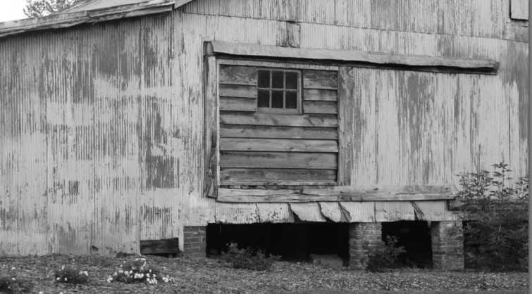

.png)
.PNG)
.PNG)
.PNG)
.PNG)
.PNG)
.JPG)
.JPG)
.PNG)
.PNG)


No not the barn above…that’s just an old barn that I took a photo of around here. Today’s home is MUCH better than that. I didn’t really plan to write a post about barns. My plan was to write about ski houses this week… but in my last post we saw that gifted designer Emma Sims Hilditch lives with her family in a home that had a previous life as a barn, and her firm converted a stable into 3 guest cottages. (That should count as a kind of barn, right?) Well guess what. As I was doing research on the house I planned to share with you, I learned that the owner (another designer) was very much inspired by…a barn. 🙂 So since the planets seem to be aligning around the barn theme, I thought…why not go with it?
You probably saw today’s home featured many years ago in House Beautiful. It is the Sun Valley, Idaho vacation home of designer Chipper Joseph and her family. She had been very much inspired by the historic Breeding Barn at Shelburne Farms in Vermont.
It was the job of Arbonies King Vlock Architects to reinterpret the elements of that New England barn into a family home far from New England. They called the finished home The Elegant Barn. Here is the exterior of one wing from the House Beautiful article by Frances Schultz with photographs by Maura McEvoy. (You know I love all that snow!)
You can certainly see the influence of the Vermont barn in this photo from the architects’ site.
They included a 28 foot wood covered ceiling in an area appropriately called the hayloft.
The great room has two granite fireplaces – one at each end of the room. You can see from the following two photographs that it has been redecorated at one time or another.
I prefer the following version that has more red in it. 🙂
I mentioned that the owner is a designer. She has worked for Ralph Lauren. I love her fearless use of color and pattern in her home. Do you think she used enough in the dining room?…tartan plaid placemats, a red print upholstery fabric, a multicolor patterned rug, and those beautifully cheerful yellow chairs.
The kitchen does not appear to be very large in this huge house. I guess if you are on vacation, you might want to spend your time skiing – not cooking. (Notice the barn door leading into the kitchen – another interpretation of barn elements in the home.)
In the next photograph you can see that there are yellow cabinets across from the white cabinets. I like the mix of color and the mix of hardware. The wood floors were all made from 19th century oak barn beams. They are gorgeous!
As much as I love that kitchen, I think my favorite space in the house is the mudroom with its hanging canoe.
(Where did they get geraniums in full bloom when there is that much snow outside???)
If you go back up and look at the photograph of the exterior, you will see that the architects also included “silos” in their design as yet another barn element. Those “silos” house spiral staircases. You can really see the beauty of the reclaimed wood in them.
The only place that doesn’t seem to have a large amount of color and pattern is the master bath. It is a very soothing place.
You get a better idea of its size in this photo. (Interesting to see the different versions of styling the shelves.)

And last, but certainly far from least, this master bedroom has made its rounds on Pinterest (and rightly so!) How can you resist an antique bed and red checks?! 🙂
Are you ready to move in? I would adore it just like it is. If you will click on the links you can see additional photos of this beauty..including more of the living room, the entryway, and a hallway that is one of my all time favorites.
Do you have a favorite room from this barn inspired home?
I’d love to hear what you think!


.PNG)
That bathtub is calling my name!
———————————————————–
It’s a beautiful one. What a way to relax!
Kelly
Oh my, what a house! Beautiful! I wish I could be as bold with color as she was in the dining room. I guess if you have a room that big, bold colors are the way to go. The rooms in my house are too small for such colors. My aunt turned their small stable into a guest house. I have never seen it though. I also have a friend that just built a barn house. I love how spacious they are. the high ceilings and large windows. If I ever get a redo of this house…
————————————————————–
You must have a talented aunt to convert a stable into a guest house. (You need to be her guest!) I love high ceilings and windows windows windows. My husband says I would live in a glass house if I could. Let there be light!
Thank you for reading the post and leaving your comment here, Jayne.
Kelly
They can leave me that house along with an allowance to pay the utilities and cleaning help. Just gorgeous!
————————————————————
I will be sure to let them know that you would like to have it when they tire of it! 🙂
Kelly
Hi Kelly, It reminds me of William Diamond and Anthony Baratta’s use of colors and patterns. I love these homes decorated with lively colors! It inspires me to use more color in my home. Thanks for sharing this lovely place with us. Oh, and my favorite room is the dining room. Oh to be that bold!
————————————————————
Yes, it reminded me of some of their work too, Anne. 🙂 I think it is the patterned rug, because they always had colorful patterned rugs in their rooms. And I think I recall a home that they did that had the same fabric that was used on the upholstered chairs they show at the dining table. I don’t think I will ever be that bold in my use of color and pattern.
Kelly
Hi Kelly,
What an amazing house! My favorite is the Master bedroom. It is too wonderful. There is a reason why she worked for Ralph Lauren–she has perfect taste. Thanks for a great post.
—————————————————————
Hi Anne! I sure wish I could have found more pictures of the master bedroom. I know it would ALL be beautiful. Oh yes, she has great taste!
Kelly
I loved your post. I am from southwest Penna and my husband was from Morgantowm,W.Va. His cousin built a house outside of Morgantown that was shaped like a barn with a winding staircase in the silo. They had an antique stain glass window in each room and a old caboose in the back yard as a play house for their kids. The coal mines came through and took their property and tore it down….that would have broke my heart.
Keep the great posts coming….
————————————————————–
Jeanne, that is awful about them tearing down such a unique home. I don’t think I could have let them do that!! I hope they salvaged what wonderful things they could from it.
Kelly
Kelly,
I love this barn theme you have going on right now! My favorite room in the house is the entry way closely followed by the living room. The entry table is awesome and those four chairs in the living room all say come on in, you are welcome here. Thanks for sharing it with us.
————————————————————
So glad you liked it Dawn! There are so many great spaces in that house, and you are right about those four chairs being so welcoming. Thanks for reading the post!
Kelly
Kelly,
As I sit at my desk observing the hot Santa Ana winds warm the day to 80 degrees (in January!), I’m convinced I need to move someplace where it snows. Oh, and I want to live in house that looks just like this one!
I remember this feature years ago, in fact I’m pretty sure I tore the pages and saved them in my inspiration binder. Great post.
Karen
———————————————————
Karen, I have been hearing about the Santa Anna winds (and every time I do I remember them being mentioned in the movie, The Holiday.) I have been wanting snow too. Let me know when you get a house like this one. I’ll be right over to ski out your back door! 🙂
Kelly
I have the most tiny bathroom in my small Cape Cod house. I think for that reason I love the master bathroom the most. What I couldn’t do with a large bathroom like that!!! Thank you for sharing!! I lived in a converted horse barn that my father-in-law built when I was first married (over 40 years ago). It was an apartment in the upper area. My first baby was born during that time. It’s still there and my brother-in-law and his wife are living there with the plans of renovating it into a house with the downstairs area as part of the home.
—————————————————————
Your converted horse barn sounds amazing, Kaye Ann! And how wonderful that your brother in law and his wife will be doing more work on it. I am so glad that there are creative people who can do work like that. Kudos to them!
Kelly
Wow! How gorgeous! I love the architecture….windows, floors, walls, doors. My favorite room is the bathroom. Thanks for sharing.
———————————————————–
Definitely – the architectural elements are superb! I think they outdid themselves with that bathroom, didn’t they? Thank you for reading and leaving your comment, Kathy.
Kelly
I let out a gasp when I saw that bedroom. That Great Room…can you imagine sitting in one of those chairs, book (and hot cocoa)in hand, roaring fire and snow falling outside? Be still my heart. Now….how do I get my 1960’s split level to be this beautiful?
———————————————————-
It would be nice, wouldn’t it, Barb? I am not quite sure how you transform a 1960’s split level into that…but you could use some of the same elements…cozy chairs with blankets, a patterned rug, yellow kitchen cabinets, yellow dining room chairs…just “thinking aloud” here.
Kelly
P.S. Thinking about it – I could just strap on my skis and head out from our back door if I were so inclined… there is that much snow this year!
C
Dear Kelly,
My favourite room is the master bedroom hands down. Love the cosiness of it all.
Funnily enough those high ceilings everywhere just make me think about the high energy bills! How unromantic of me!! I can’t believe it’s me saying that!
Since you love snow so much you must, must, must take a trip up here to Calgary. This winter it has been a winter wonderland since early November with snow blanketing everything. We are Xcountry skiing every weekend in the mountains and it looks like we live in a Christmas card! It snowed again all yesterday morning which covered all of the brown yucky slushy bits at the side of the roads. Renewal is good! 🙂
Take care
Cath
———————————————————–
I wish I could find more photos of that bedroom. I, too, loved what I could see of it. I am sure the rest of the room must be gorgeous as well. My husband would say the same thing about the energy bills. “Living in a Christmas card”…oh how I love that!! I bet it is truly a winter wonderland in Calgary now. I wish we could get even just a little bit. Is that too much to ask for???
Kelly
I really love the board and batten wall treatment in the bedroom~
———————————————————–
Oh yes, Susan! They did a beautiful job with the walls!
Kelly
I have to say I really love the foyer and the kitchen. I especially love that door that blocks off the kitchen. Having a house with the kitchen and family room that is one big room, I would love to have a door. I must to be the only person who would love to have a separate kitchen and not an open floor plan.
Beautifully decorated home.
————————————————————
My husband is right there with you, Mary, wanting a kitchen separate from the family room. He says that all the noise in the kitchen makes it hard to hear and enjoy the television in the family room. So I know exactly where you are coming from with that. We originally had a wall between our kitchen and dining area in this house because I didn’t like seeing the mess of all the dirty pots and dishes when we were eating. But I eventually got over that 🙂 and we knocked out the wall.
Kelly
Pick a favorite room? Seriously? I love, love, love the great room, kitchen, mudroom, master bathroom, the bedroom, dining room. Did I leave a room out? WOW! I can picture myself in every single room…reading a book in the great room with a fire in the fireplace, cooking in the kitchen, sitting in the dining room with friends enjoying a delicious meal prepared by my husband (hee, hee), soaking in the tub, get my drift???? I’m so glad you came across this beautiful home and shared it with us.
———————————————————-
I think you kind of liked the house, Polly! LOL I agree that it would be a wonderful home to live in …or at least to visit on vacation every now and then. Happy you enjoyed the post!
Kelly
I think my favorite room is the bathroom— getting ready to remodel my bathrooms just MAY have something to do with that!? Just had to do redo all septic drain areas — oh my– but first things first, right?! Now to decide what I want to do in both baths. Decisions— decisions! 🙂
————————————————————-
Well the bathroom IS amazingly gorgeous (and HUGE!), but I would imagine remodeling a bathroom just might have an impact on that. 🙂 Good luck with all the decisions!
Kelly